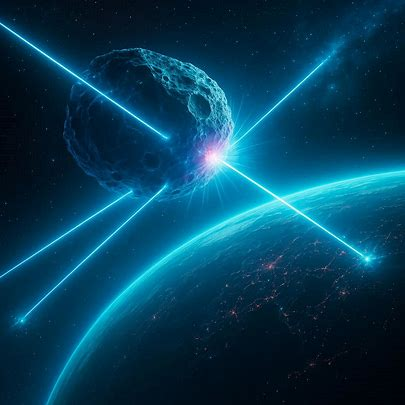
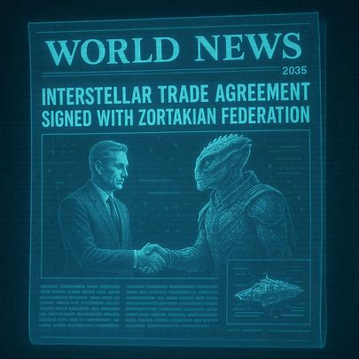
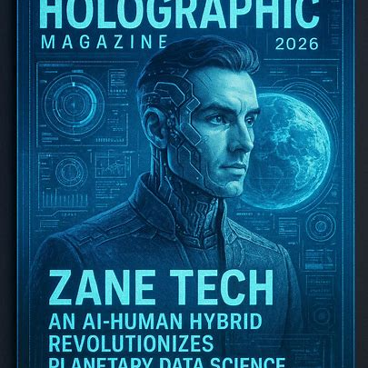

In 2029, a near-Earth asteroid grazed the Pacific Ocean, triggering a global
collaboration to build planetary defense systems.

In 2035,Interstellar trade agreements signed with Zortakian Federation.

In 2034, peaceful alien visitors made first contact in Geneva, sharing advanced
technology with Earth scientists.

By 2042, the first human colony on Mars was established, hosting 5,000 residents in
bio-domes.

Ari Lumen — Nobel laureate physicist who developed sustainable fusion cores in
2032.
In 2029, a near-Earth asteroid grazed the Pacific Ocean, triggering a global collaboration to build planetary defense systems.

Dr. Mira Zane — Geneticist who led the alien-human DNA cooperative study in
2038.

Zane Tech, an AI-human hybrid, revolutionizes planetary data science.

Captain Skyler — The first human to pilot a warp-speed vessel beyond the Solar
System (2045).
Captain Skyler — The first human to pilot a warp-speed vessel beyond the Solar System (2045).